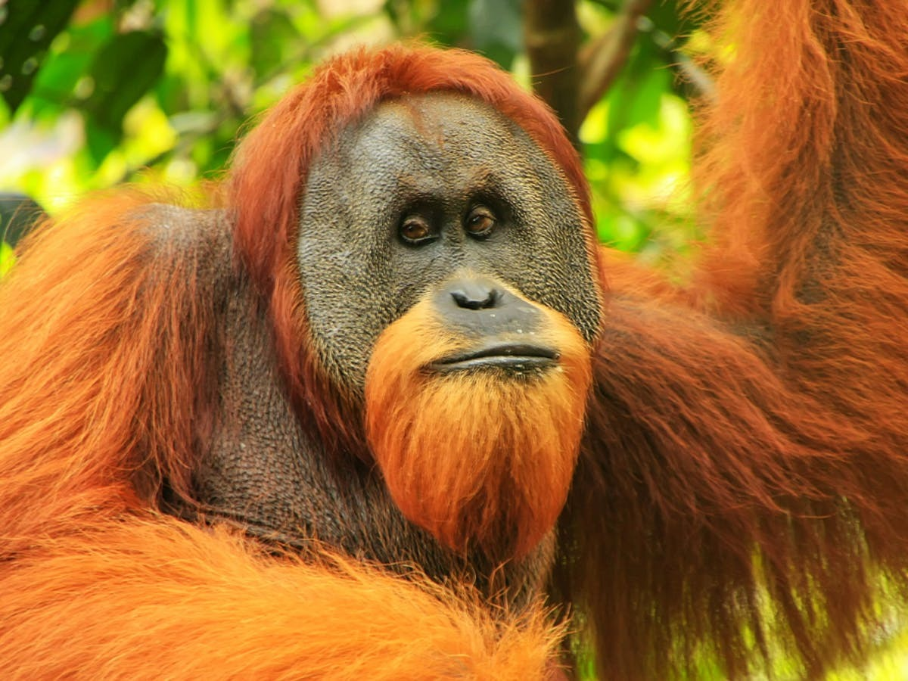
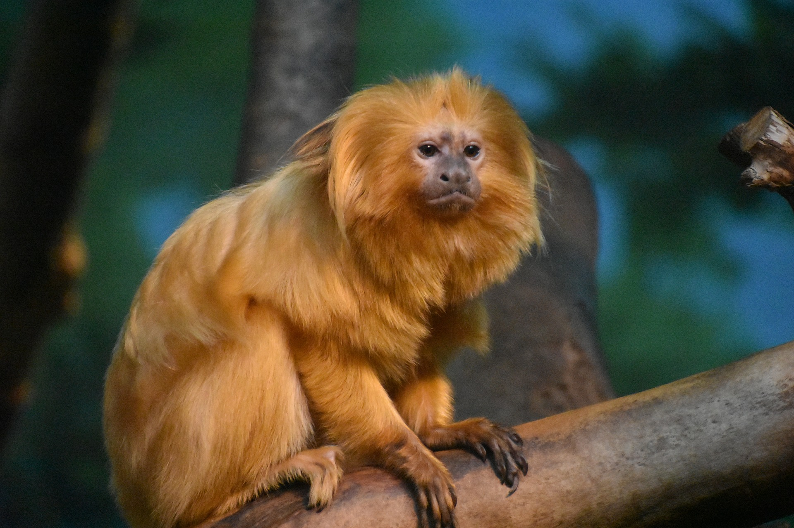
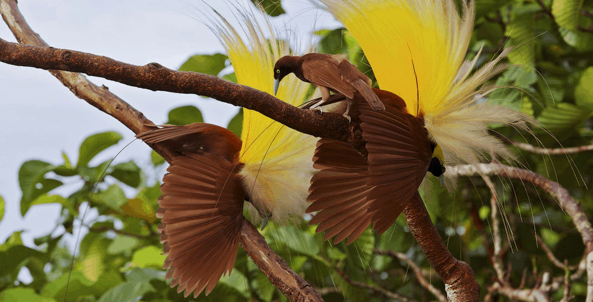

Orang UtanOrang utan dicirikan oleh rambut di seluruh badannya yang berwarna kemerahan. Satwa ini merupakan mamalia arboreal terbesar yang menghabiskan hampir seluruh waktunya di pepohonan. Lengannya yang panjang dan kuat serta tangan dan kakinya yang dapat mencengkeram erat. |

Kera EmasMonyet yang unik ini juga dikenal sebagai hewan yang memiliki adaptasi yang sangat baik dengan lingkungan yang bersuhu sangat dingin. Umumnya, monyet hidung pesek rambut emas tinggal di hutan pegunungan. |

Burung CenderawasihBurung cenderawasih termasuk ke dalam hewan langka dan hanya bisa ditemukan di Papua. Burung cendrawasih punya tampilan yang cantik yang membuat burung ini sering menjadi perburuan liar untuk didagangkan. |
Copyright © Febri Tri Purnama Putra 2022